Provas das perguntas 3 e 4 do girar (Gradus Primus)
09/11/2026 · Gradus Primus copiado (70 folhas), pasta de dados só destas provas · o programa rodou sem
janela na tela (desenhado na memória) · as fotos são do próprio programa. Teste de olho: PRONTO PARA CONFERIR.
Pergunta 4 — o teste antigo do "daqui em diante"
Livro: folhas 2 a 70 divididas, menos a folha 4 ("não dividir esta"), que virou a página 6, inteira
(circulada em vermelho). Clique: na página 3, "daqui em diante" + ¼ à direita.
- O teste antigo cobra o jeito antigo: as páginas 3, 4, 5, 7 e 8 deitam, mas a folha inteira (página 6) fica em pé.
- Com a sua resposta "Giram também", a página 6 gira junto com as outras (jeito novo).
- Por isso esse teste antigo falha no programa novo; trocar uma linha dele faz ele cobrar o jeito novo.
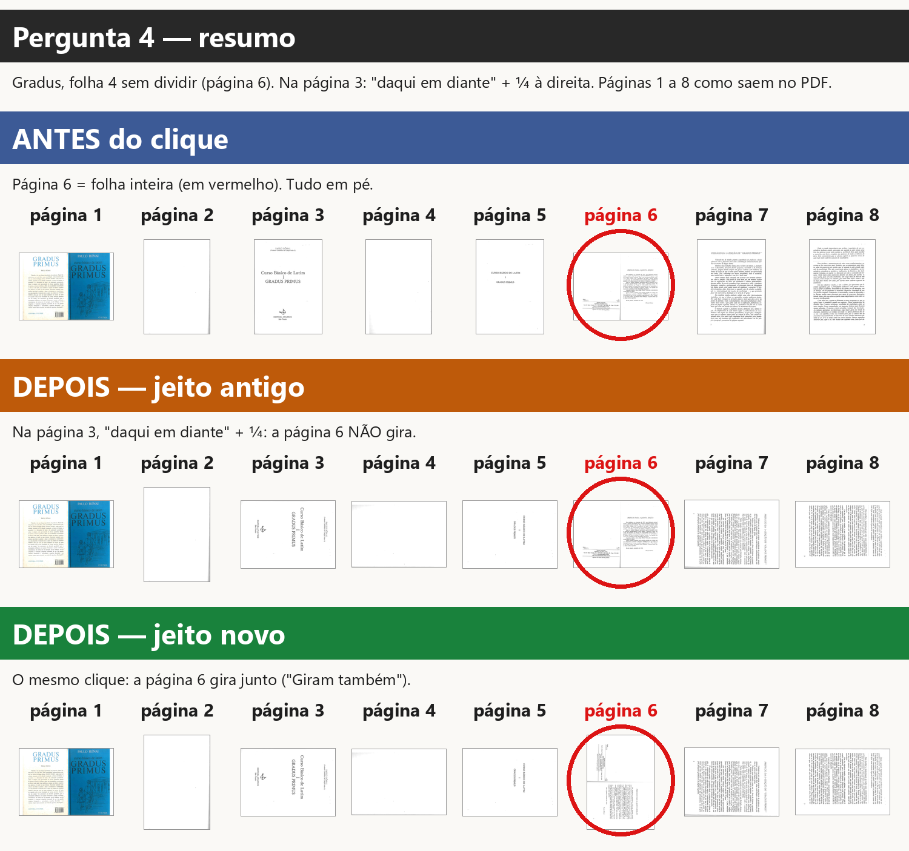
Miniaturas (tira do programa):
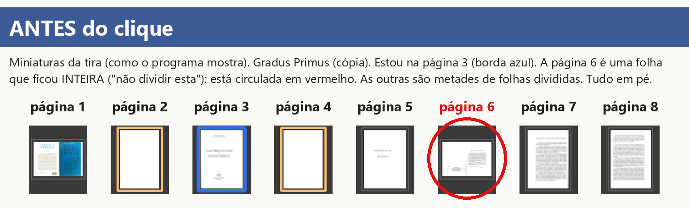
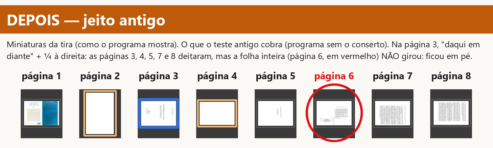
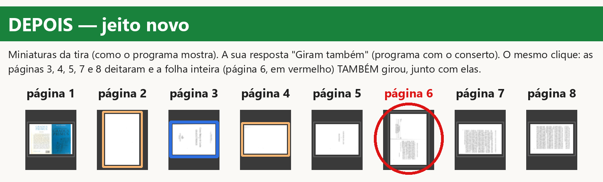
As páginas como saem no PDF:
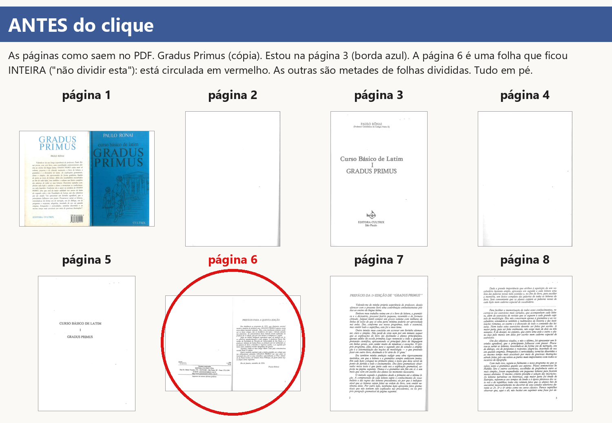
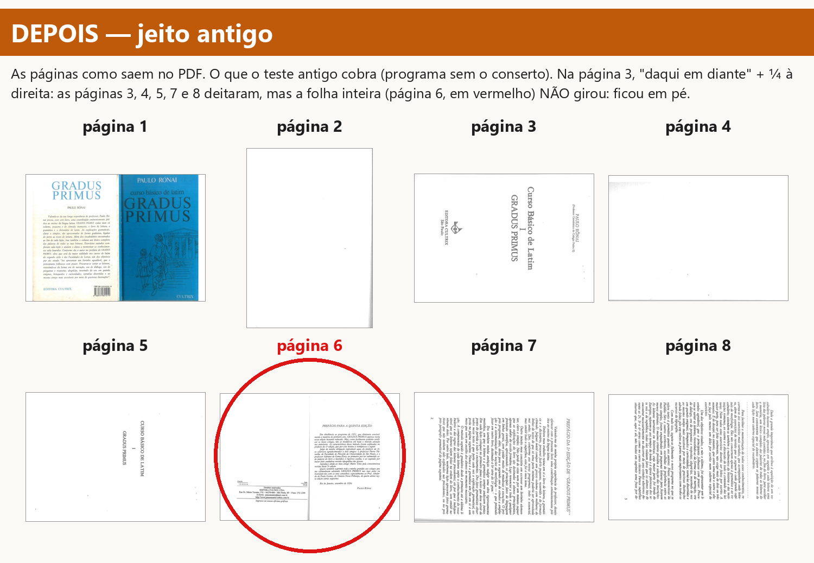
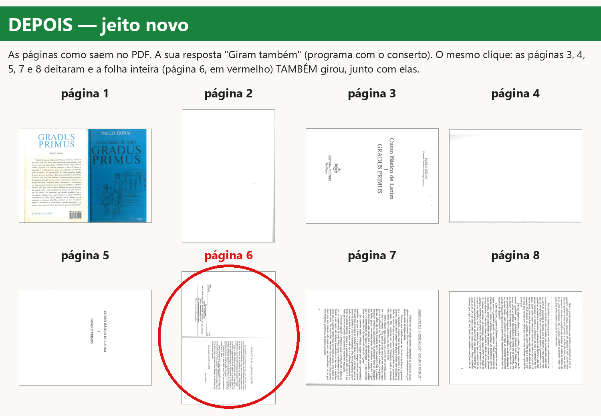
Pergunta 3 — Dividir com "Duas lado a lado"
Livro: folhas 2 a 70 divididas (a capa inteira). Ferramenta Dividir, vista "Duas lado a lado", folha 10
(páginas 18 e 19, em vermelho). Clique: "todas as folhas" + ¼ à direita.
- "Fica como está": as folhas giram inteiras e a linha azul fica no mesmo lugar; no livro impresso, cada página
sai como uma tira estreita com metade de duas páginas misturadas (a confusão do print a-70).
- "Página por página também" (simulação, ainda não existe no Dividir): no livro impresso, cada página sai
inteira, sem pedaço da vizinha (deitada, porque o clique foi ¼); a tela grande do Dividir continua mostrando a
folha em pé, só as miniaturas mudam.
- Nas duas opções a capa (folha inteira) gira inteira.
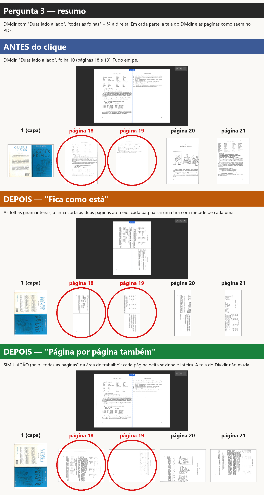
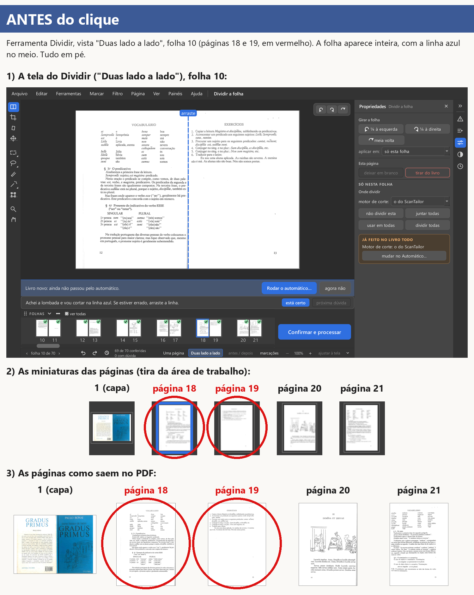
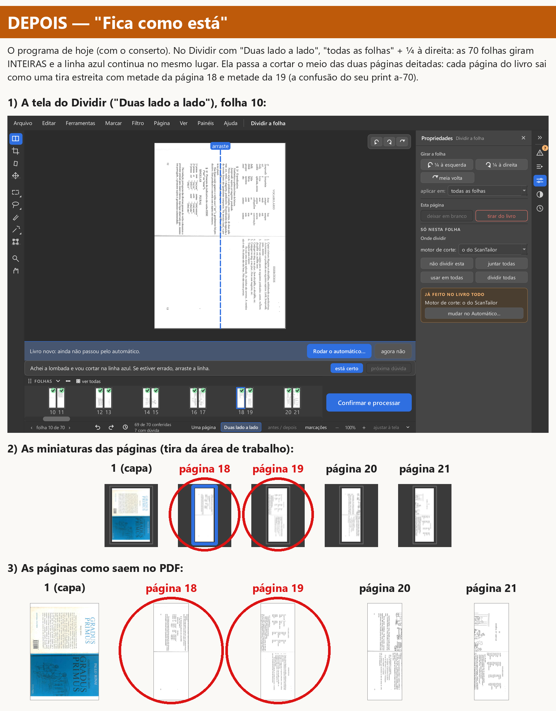
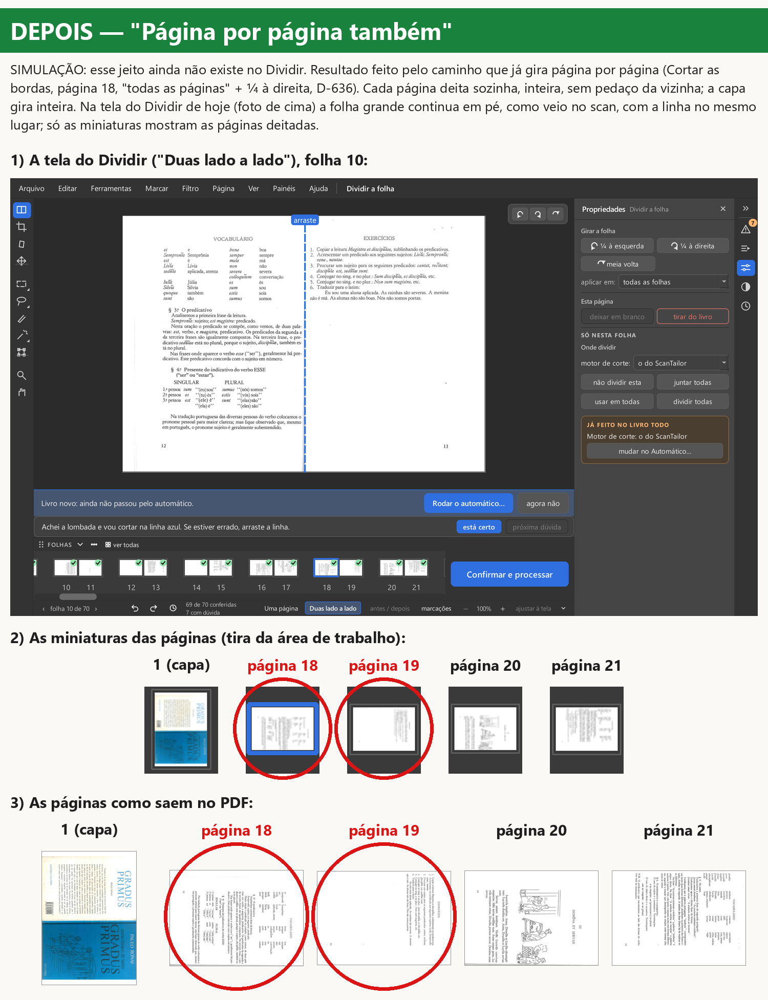
Ressalvas
- O "Página por página também" é uma simulação: o resultado foi feito pelo caminho que já existe (Cortar as
bordas, página 18, "todas as páginas", D-636). A foto da tela do Dividir nessa imagem é a tela de hoje com esse
resultado; se o jeito for feito no Dividir, essa tela pode mudar.
- O Dividir com "Uma página" já gira página por página hoje (ali a lista diz "todas as páginas").
- A cópia do Gradus da conferência anterior (
testa-girar-capa\saida_teste\livros\gradus.pdf) tem as folhas
deitadas; usei uma cópia nova do Gradus da Área de Trabalho (folhas em pé), como o relatório do girar-capa.
- "jeito antigo" = código
6904a634 (sem o conserto); "jeito novo" = girar-capa-2026-11-07 (80696770).
Os números de cada clique estão em estado-*.json. Nada diferente do que o relatório do girar-capa dizia.
Editor de Impressão · gerado em 09/11/2026 às 17:45